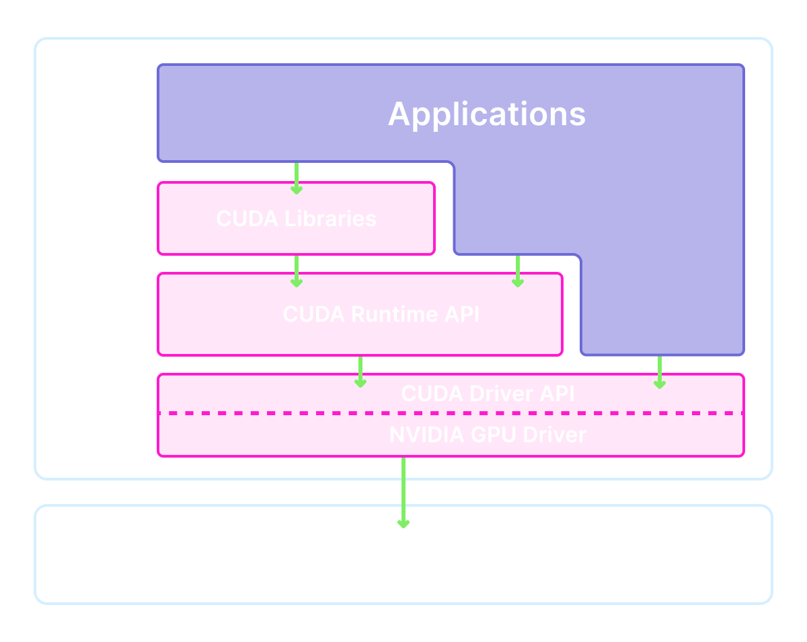

Using CUDA on Modal
Modal makes it easy to accelerate your workloads with datacenter-grade NVIDIA GPUs.
To take advantage of the hardware, you need to use matching software: the CUDA stack. This guide explains the components of that stack and how to install them on Modal. For more on which GPUs are available on Modal and how to choose a GPU for your use case, see this guide. For a deep dive on both the GPU hardware and software and for even more detail on the CUDA stack, see our GPU Glossary.
Here’s the tl;dr:
- The NVIDIA Accelerated Graphics Driver for Linux-x86_64, version 580.95.05,
and CUDA Driver API, version 13.0, are already installed.
You can call
nvidia-smior run compiled CUDA programs from any Modal Function with access to a GPU. - That means you can install many popular libraries like
torchthat bundle their other CUDA dependencies with a simplepip_install. - For bleeding-edge libraries like
flash-attn, you may need to install CUDA dependencies manually. To make your life easier, use an existing image.
What is CUDA?
When someone refers to “installing CUDA” or “using CUDA”, they are referring not to a library, but to a stack with multiple layers. Your application code (and its dependencies) can interact with the stack at different levels.

This leads to a lot of confusion. To help clear that up, the following sections explain each component in detail.
Level 0: Kernel-mode driver components
At the lowest level are the kernel-mode driver components. The Linux kernel is essentially a single program operating the entire machine and all of its hardware. To add hardware to the machine, this program is extended by loading new modules into it. These components communicate directly with hardware — in this case the GPU.
Because they are kernel modules, these driver components are tightly integrated with the host operating system that runs your containerized Modal Functions and are not something you can inspect or change yourself.
Level 1: User-mode driver API
All action in Linux that doesn’t occur in the kernel occurs in user space. To talk to the kernel drivers from our user space programs, we need user-mode driver components.
Most prominently, that includes:
- the CUDA Driver API,
a shared object called
libcuda.so. This object exposes functions likecuMemAlloc, for allocating GPU memory. - the NVIDIA management library,
libnvidia-ml.so, and its command line interfacenvidia-smi. You can use these tools to check the status of the system’s GPU(s).
These components are installed on all Modal machines with access to GPUs. Because they are user-level components, you can use them directly:
import modal
app = modal.App()
@app.function(gpu="any")
def check_nvidia_smi():
import subprocess
output = subprocess.check_output(["nvidia-smi"], text=True)
assert "Driver Version:" in output
assert "CUDA Version:" in output
print(output)
return outputLevel 2: CUDA Toolkit
Wrapping the CUDA Driver API is the CUDA Runtime API, the libcudart.so shared library.
This API includes functions like cudaLaunchKernel and is more commonly used in CUDA programs (see this HackerNews comment for color commentary on why).
This shared library is not installed by default on Modal.
The CUDA Runtime API is generally installed as part of the larger NVIDIA CUDA Toolkit,
which includes the NVIDIA CUDA compiler driver (nvcc) and its toolchain
and a number of useful goodies for writing and debugging CUDA programs (cuobjdump, cudnn, profilers, etc.).
Contemporary GPU-accelerated machine learning workloads like LLM inference frequently make use of many components of the CUDA Toolkit,
such as the run-time compilation library nvrtc.
So why aren’t these components installed along with the drivers? A compiled CUDA program can run without the CUDA Runtime API installed on the system, by statically linking the CUDA Runtime API into the program binary, though this is fairly uncommon for CUDA-accelerated Python programs. Additionally, older versions of these components are needed for some applications and some application deployments even use several versions at once. Both patterns are compatible with the host machine driver provided on Modal.
Install GPU-accelerated torch and transformers with pip_install
The components of the CUDA Toolkit can be installed via pip,
via PyPI packages like nvidia-cuda-runtime-cu12 and nvidia-cuda-nvrtc-cu12.
These components are listed as dependencies of some popular GPU-accelerated Python libraries, like torch.
Because Modal already includes the lower parts of the CUDA stack, you can install these libraries
with the pip_install method of modal.Image, just like any other Python library:
image = modal.Image.debian_slim().pip_install("torch")
@app.function(gpu="any", image=image)
def run_torch():
import torch
has_cuda = torch.cuda.is_available()
print(f"It is {has_cuda} that torch can access CUDA")
return has_cudaMany libraries for running open-weights models, like transformers and vllm,
use torch under the hood and so can be installed in the same way:
image = modal.Image.debian_slim().pip_install("transformers[torch]")
image = image.apt_install("ffmpeg") # for audio processing
@app.function(gpu="any", image=image)
def run_transformers():
from transformers import pipeline
transcriber = pipeline(model="openai/whisper-tiny.en", device="cuda")
result = transcriber("https://modal-cdn.com/mlk.flac")
print(result["text"]) # I have a dream that one day this nation will rise up live out the true meaning of its creedFor more complex setups, use an officially-supported CUDA image
The disadvantage of installing the CUDA stack via pip is that
many other libraries that depend on its components being installed as normal system packages cannot find them.
For these cases, we recommend you use an image that already has the full CUDA stack installed as system packages
and all environment variables set correctly, like the nvidia/cuda:*-devel-* images on Docker Hub.
TensorRT-LLM is an inference engine that accelerates and optimizes performance for the large language models. It requires the full CUDA toolkit for installation.
cuda_version = "12.8.1" # should be no greater than host CUDA version
flavor = "devel" # includes full CUDA toolkit
operating_sys = "ubuntu24.04"
tag = f"{cuda_version}-{flavor}-{operating_sys}"
HF_CACHE_PATH = "/cache"
image = (
modal.Image.from_registry(f"nvidia/cuda:{tag}", add_python="3.12")
.entrypoint([]) # remove verbose logging by base image on entry
.apt_install("libopenmpi-dev") # required for tensorrt
.pip_install("tensorrt-llm==0.19.0", "pynvml", extra_index_url="https://pypi.nvidia.com")
.pip_install("hf-transfer", "huggingface_hub[hf_xet]")
.env({"HF_HUB_CACHE": HF_CACHE_PATH, "HF_HUB_ENABLE_HF_TRANSFER": "1", "PMIX_MCA_gds": "hash"})
)
app = modal.App("tensorrt-llm", image=image)
hf_cache_volume = modal.Volume.from_name("hf_cache_tensorrt", create_if_missing=True)
@app.function(gpu="A10G", volumes={HF_CACHE_PATH: hf_cache_volume})
def run_tiny_model():
from tensorrt_llm import LLM, SamplingParams
sampling_params = SamplingParams(temperature=0.8, top_p=0.95)
llm = LLM(model="TinyLlama/TinyLlama-1.1B-Chat-v1.0")
output = llm.generate("The capital of France is", sampling_params)
print(f"Generated text: {output.outputs[0].text}")
return output.outputs[0].textMake sure to choose a version of CUDA that is no greater than the version provided by the host machine.
Older versions in the 12.* and 13.* series are guaranteed to be compatible with the host machine’s driver,
but older major versions (11.*, 10.*, etc.) may not be.
What next?
For more on accessing and choosing GPUs on Modal, check out this guide. To dive deep on GPU internals, check out our GPU Glossary.
To see these installation patterns in action, check out these examples: